7 Form Controls
7.1 Introduction
XForms User Interface controls, also called form controls, are declared using markup elements, and their behavior refined via markup attributes. This markup may be further decorated with style properties that can be set using CSS stylesheets to deliver a customized look and feel. Form controls defined here are bound to the underlying instance data using the binding attributes as defined in the chapter 9 Binding.
The XForms form controls enable accessibility by taking a uniform approach to such features as captions, help text, tabbing and keyboard shortcuts. Internationalization issues are being addressed in conjunction with the Internationalization Working Group and are addressed by following the same design principles as within the rest of XHTML. All form controls defined here are suitable for implementation as Aural CSS (ACSS) form controls.
Several XForms form controls are of a general class that represent the concept of selecting from available choices. Such selection controls can be characterized along a presentational dimension that is completely orthogonal to the functional distinction. Distinguishing the presentational from the functional dimension allows the expression of the meaning of a particular form control--see [AUI97] for a definition of such high-level user interaction primitives.
This chapter includes non-normative graphical examples of many form controls. The CSS Working Group is providing assistance with creating default CSS rules for producing visual renderings of standard XForms form controls. This specification will also include non-normative rules for how these same controls might be rendered to alternative access modalities.
All form control names listed here should be considered advisory until further consensus is reached in the Working Group.
For each form control, the following aspects will be defined:
Description
Examples
Data Binding Restrictions
Implementation Hints
XML Representation
The form controls defined here use common attributes and elements that are defined later in this chapter (7.13 Common Markup).
7.2 textbox
Description: This form control enables free-form data entry.
Examples:
<textbox ref="order/shipTo/street" style="width:xx; height:xx"> <caption>Street<caption> <help>Please enter the number and street name</help> </textbox> |
In the above, CSS style attributes height
and width
specify the display size of the form control. Note
that the constraints on how much text can be input are
obtained from the underlying XForms Model definition
and not from these display properties.
A graphical browser might render the above example as follows:
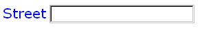
Data Binding Restrictions: The entered value of the form control (after processing as described in 11 Processing Model) is treated as a lexical value. A datatype bound to this form control will be treated as a restriction upon the allowed entered value.
Implementation Hints: Implementations may represent this form control with more than one native user interface control, for example a form control that appears to be three separate smaller entry fields for "day", "month", and "year" for a date datatype. Further, for date datatypes, a calendar system for data entry may be used, including non-Gregorian calendar systems. For numeric datatypes, additional features might include spin buttons or other conveniences. When bound to a datatype that accepts newline characters, this form control should accept multi-line input.
Example: XML Representation: <textbox>
<textbox (common attributes) > <!-- caption, help?, hint?, onevent? --> </textbox> |
common attributes defined in 7.13.1 Common Attributes
7.3 secret
Description: This form control is used for obtaining information that is considered sensitive, and thus not echoed to a visual or aural display as it is being entered, e.g., password entry.
Example:
<secret ref="/login/password" style="width:xx; height:xx"> <caption>Please enter your password --it will not be visible as you type.<caption> </secret> |
In the above, CSS style attributes
height and width specify
the display size of the form control. Note that
the constraints on how much text can be input are
obtained from the underlying XForms model definition
and not from these display properties.
A graphical browser might render this form control as follows:
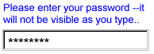
Data Binding Restrictions: Identical to textbox.
Implementation Hints: In general, implementations, including accessibility aids, would render a "*" or similar character instead of the actual characters entered, and thus would not render the entered value of this form control. Note that this provides only a casual level of security; truly sensitive information will require additional security measures outside the scope of XForms.
Example: XML Representation
<secret>
<secret (common attributes) > <!-- caption, help?, hint?, onevent? --> </secret> |
common attributes defined in 7.13.1 Common Attributes
7.4 uploadMedia
Description: This form control enables the common feature of Web sites to upload a file from the local file system, as well as accepting input from various devices including microphones, pens, and digital cameras.
Example:
<uploadMedia ref="mail/attach1" mediaType="image/*"> <caption>Select image:</caption> </upload> |
A graphical browser might render this form control as follows:
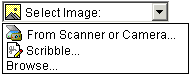
Data Binding Restrictions: This form control can only be bound to datatypes xsd:base64Binary or xsd:hexBinary, or types derived by restriction from these.
Implementation Hints:
-
Implementations with a file system SHOULD support "file upload"--selecting a specific file, for all mediaTypes. The types of files presented by default MUST reflect the mediaType specified in the XForms Model, for example defaulting to only audio file types in the file dialog when the mediaType is "audio/*". In XForms 1.0, there is a 1:1 binding between a uploadMedia form control and one of the
xform:binarydatatypes, although that single file may be compound (e.g. application/zip). -
Implementations with specific pen/digitizer hardware SHOULD (and implementations with other pointing devices MAY) support "scribble"--allowing in-place creation of pen-based PNG image data, when the mediaType is "image/*" or "image/png". Other mediaTypes besides image/png MAY share this input method.
Note:
Commonly, people have trouble drawing recognizable figures or signatures with a conventional pointing device like a mouse or track ball. Hence, a reasonable implementation of XForms might not want this feature, hence the "MAY" here for generic pointing devices
-
Implementations with specific audio recording capabilities SHOULD support record--in-place recording of an audio clip, when the mediaType is "audio/*" or "audio/basic". Other mediaTypes besides "audio/basic" MAY share this input method.
-
Implementations with a digital camera/scanner interface SHOULD support send image--in-place upload of images from an attached device, when the mediaType is "image/*" or "image/jpeg". Other mediaTypes besides "image/jpg" MAY share this input method.
-
Implementations with video recording capability SHOULD provide a "record" option for video/* mediaTypes.
-
Implementations with 3d capabilities SHOULD provide a 3d interface option for model/* mediaTypes.
-
Implementations MAY provide proprietary implementations (for example, a mediaType of text/rtf could invoke an edit window with a proprietary word processing application)
-
Implementations are encouraged to support other input devices not mentioned here.
Example: XML Representation: <uploadMedia>
<uploadMedia (common attributes) mediaType = list of content types > <!-- caption, help?, hint?, onevent? --> </uploadMedia> |
common attributes defined in 7.13.1 Common Attributes
mediaType = list of media types - list of suggested media types, used by the XForms Processor to determine which input methods apply.
7.5 selectOne
Description: This form control allows the user to make a single selection from multiple choices.
Typically, a stylesheet would be used to determine the exact appearance of form controls, though a means is provided to make a concrete selection through an attribute. The value of the attribute consists of one of the following values, each of which may have a platform-specific behavior:
radioGroup
checkboxGroup
pulldown
listbox
comboGroup
Example:
<selectOne ref="icecream/flavor">
<caption>Flavor</caption>
<choices>
<item value="vanilla">Vanilla</item>
<item value="strawberry">Strawberry</item>
<item value="chocolate">Chocolate</item>
</choices>
</selectOne> |
In the above example, selecting one of the choices will result in the associated value
given by attribute value on the selected item being set in the underlying data instance at the location icecream/flavor.
The values given in the user interface shown above may be used in constructing a default schema if no schema is provided by the XForms
author.
A graphical browser might render this form control as any of the following:
| listbox | checkboxGroup | radioGroup | pulldown |
|---|---|---|---|
| 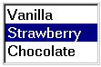 | 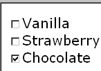 | 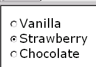 | 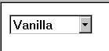 |
Data Binding Restrictions: This form control will select the lexical value from the value attribute (or in the absence of such an attribute, the text content of the item element) of the single item selected. If the datatype bound to this form control does not permit the selected value (for
instance a datatype of xsd:decimal with an attribute value="abc"), the form control with that selection will be perpetually considered invalid and it will not be possible to submit the form.
Authors are encouraged to avoid this situation.
If the datatype bound to this form control includes a non-enumerated value space (for instance xsd:string, or xsd:string as part of a union), or if the "comboGroup" UI hint is specified, the form control then should allow free data entry, as
described in 7.2 textbox, in addition to the behavior defined here.
Issue (items-specified-elsewhere):
Yet to be decided is allowing display and/or storage values located elsewhere to be retrieved from a binding expression.
Some user interface combinations may allow a state of zero selected items, in which case the lexical value of a zero-length string is selected.
Implementation Hints:
User interfaces may choose to render selectOne
as a pulldown list or group of radio buttons, among other options. The selectUI attribute offers a hint as to which
rendering might be most appropriate, although any styling information (such as CSS) should take precedence.
Example: XML Representation: <selectOne>
<selectOne
(common attributes)
selectUI = ("radioGroup" | "checkboxGroup" | "pulldown" | "listbox" | "comboGroup")
>
<!-- caption, help?, hint?, onevent?, choices* -->
</selectOne> |
common attributes defined in 7.13.1 Common Attributes
selectUI = ("radioGroup" | "checkboxGroup" | "pulldown" | "listbox" | "comboGroup") - appearance override
7.6 selectMany
Description: This form control allows the user to make multiple selections from multiple choices.
Example:
<selectMany ref="icecream/flavors">
<caption>Flavors</caption>
<choices>
<item value="v">Vanilla</item>
<item value="s">Strawberry</item>
<item value="c">Chocolate</item>
</choices>
</selectMany> |
In the above example, more than one flavor can be selected, populating the instance data with multiple selections.
A graphical browser might render form control
selectMany as any of the following:
| listbox | checkboxGroup | radioGroup | pulldown |
|---|---|---|---|
| 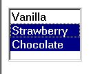 |  |
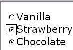 | N/A |
Data Binding Restrictions: When zero or one items are selected, this form control behaves exactly like selectOne with regard to the lexical value that is selected. When multiple items are selected, the lexical value is a space-separated
list of the selected values. The datatype bound to this form control must be capable of supporting this format, typically
a Schema list type. Cases where each of the multiple selections appear in the instance data attached to a separate element
are handled through the repeat construction (8.2 Repeating Structures).
Note:
A limitation of the Schema list datatypes is that whitespace characters in the storage values (the value="..." attribute of the item element) are always interpreted as separators between individual data values. Therefore, authors should avoid using whitespace
characters within storage values.
For instance, the following incorrect item declaration:
<item value="United States of America">USA</item> |
when selected, would introduce not one but four additional selection values: "America", "of", "States", and "United".
Implementation Hints: An accessibility aid might allow the user to browse through the available choices and leverage the grouping of choices in the markup to provide enhanced navigation through long lists of choices.
Example: XML Representation: <selectMany>
<selectMany
(common attributes)
selectUI = ("radioGroup" | "checkboxGroup" | "pulldown" | "listbox" | "comboGroup")
>
<!-- caption, help?, hint?, onevent?, choices* -->
</selectMany> |
common attributes defined in 7.13.1 Common Attributes
selectUI = ("radioGroup" | "checkboxGroup" | "pulldown" | "listbox" | "comboGroup") - appearance override
7.7 selectBoolean
Description: This form control represents an on/off or true/false or yes/no (or similar) choice.
Example:
<selectBoolean ref="questionnaire/married">
<caption>Are you married?</caption>
<help>We need this to determine your tax allowance</help>
<choices>
<item value="true">Yes</item>
<item value="false">No</item>
</choices>
</selectBoolean> |
Data Binding Restrictions: This form control produces only two possible lexical values: true or false. To be considered valid, the datatype bound to this form control (typically xform:boolean) must be able to accept these two lexical values.
Note:
Scenarios where the desired lexical value is anything other than 'true'/'false' are not suitable for the selectBoolean form control.
For example, if the values placed into the instance data were required to be either "male" or "female", the selectOne form control should be used instead.
Implementation Hints: Visual implementations would typically render this as a checkbox. In some cases, like the above example
or in aural environments, it may be helpful to provide labels for the respective choices. This is accomplished through the
choices mechanism, similar to the other select... form controls.
Example: XML Representation:
<selectBoolean>
<selectBoolean
(common attributes )
selectUI = ("radioGroup" | "checkboxGroup" | "pulldown" | "listbox" | "comboGroup")
>
<!-- caption, help?, hint?, onevent?, choices* -->
</selectBoolean> |
common attributes defined in 7.13.1 Common Attributes
selectUI = (TBD)
7.8 range
Description: This form control allows selection from a continuous range of values.
Example:
<range ref="/stats/balance" start="-2.0" end="2.0" stepSize="0.5"> <caption>Balance:</caption> </range> |
A graphical browser might render this as follows:
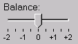
Data Binding Restrictions: Only datatypes which represent a continuous range where
it is possible to express a difference value can be bound to this form control.
(For instance, xform:decimal would be fine, while xform:string
or xform:..Binary would not). In terms of Schema datatypes, the datatype must
be either 1) have a total order relationship, or 2) an overall partial order relationship,
but totally ordered within the range specified between the start and end
attributes.
Should an enumeration be allowed to bind to this form control? If yes, how should it be ordered?
Implementation Hints: In graphical environments, this form control would typically be rendered as a "slider" or "volume control".
Notice that the attributes of this element encapsulate sufficient metadata that in conjunction with the type information available from the XForms Model proves sufficient to produce meaningful prompts when using modalities like speech, e.g., when using an accessibility aid. Thus, an Aural CSS enabled user agent might speak a prompt of the form Please pick a date in the range January 1, 2001 through December 31, 2001.
Example: XML Representation: <range>
<range (common attributes) start = datavalue end = datavalue stepSize = datavalue-difference > <!-- caption, help?, hint?, onevent? --> </range> |
common attributes defined in 7.13.1 Common Attributes
start = datavalue - Lexical starting bound for the range, of the same datatype bound to the form control
end = datavalue - Lexical ending bound for the range, of the same datatype bound to the form control
stepSize = datatype-difference - Prefered step-size to use for incrementing or decrementing the value within the form control, of a datatype that can express the difference between two values of the datatype bound to the form control
7.9 button
Description: This form control is similar to the XHTML element of the same name and allows for user-triggered actions. This form control may also be used to advantage in realizing other custom form controls.
Example:
<button> Example unavailable at time of publication </button> |
Data Binding Restrictions:
Note:
Binding a model item has no direct effect on a button, but provides a context for any event handlers that are attached.
Implementation Hints: Graphical implementations would typically render this form control as a push-button.
Example: XML Representation: <button>
<button (common attributes) > <!-- caption, help?, hint?, onevent? --> </button> |
common attributes defined in 7.13.1 Common Attributes
7.10 output
Description: This form control renders a value from the instance data, but provides no means for entering or changing data.
This form control may be used in a caption,
for instance, when authors want to say: "I charged you value - and here is
why.
Example:
I charged you <output ref="order/totalPrice"/> and here is why: |
A graphical browser might render an output form control as follows:
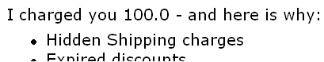
Data Binding Restrictions: The lexical value of the datatype bound to this form control is displayed, after processing as described in 11 Processing Model.
Implementation Hints: An audio browser might apply properties to this form control to aurally highlight the displayed value to provide audio formatted output.
Example: XML Representation: <output>
<output id = xsd:ID ref = binding-expression xform = instance data selector format = formatting-expression > <!-- empty content --> </output> |
id = xsd:ID - Optional unique identifier used for linking.
ref = binding-expression - Binding expression
xform = xsd:IDREF - Optional instance data selector. Details in the chapter 9 Binding.
format = formatting-expression - Optional format specifier
| Editorial note | |
We need to decide on how we define attribute
format on form control
output.
The functionality needed is similar to what
functions like printf typically
take.
|
|
7.11 submit
Description: This form control submits all or part of the instance data to which it is bound.
Example:
<submit xform="timecard"> <caption>Submit</caption> </submit> |
Implementation Hints: The default handling for this controls is equivalent to the submit() method.
Example: XML
Representation: <submit>
<submit (common attributes) > <!-- caption, help?, hint?, onevent? --> </submit> |
common attributes defined in 7.13.1 Common Attributes
7.12 reset
Description: This form control resets to the initial values all or part of the instance data to which it is bound.
Example:
<reset ref="/tcard/data" xform="timecard"> <caption>Reset totals</caption> </reset> |
Implementation Hints: The default handling for this controls is equivalent to the reset() method.
Example: XML Representation:
<reset>
<reset (common attributes) > <!-- caption, help?, hint?, onevent? --> </reset> |
common attributes defined in 7.13.1 Common Attributes
7.13 Common Markup
The preceding form control definitions make reference to several child elements and attributes that are common to several of the XForms form controls. This section defines these common markup components.
7.13.1 Common Attributes
XHTML defines two attributes on element
html:form--accept
and accept-charset. Additionally, attribute
accept-charset also appears on element
html:input.
We need to bring the equivalent to these into the XForms specification.
Example: XML Representation: Common Attributes
xmlns = xsd:anyURI xml:lang = xsd:language id = xsd:ID class = space separated list of classes style = associated style info ref = binding-expression xform = xsd:IDREF navIndex = xsd:nonNegativeInteger : 0 accessKey = xsd:token |
xmlns = xsd:anyURI - Optional standard XML attribute for identifying an XML namespace.
xml:lang = xsd:language - Optional standard XML attribute to specify a human language for this element.
id = xsd:ID - Optional unique identifier used for linking.
class = space separated list of classes - Optional selector for a style rule.
style = associated style info - Optional inline style specification.
ref = binding-expression - Binding expression. Details in the chapter 9 Binding.
xform = xsd:IDREF - Optional instance data selector. Details in the chapter 9 Binding.
navIndex = xsd:nonNegativeInteger : 0 - Optional attribute is a non-negative integer in the range of 0-32767 used to define the navigation sequence. This gives the author control over the sequence in which form controls are traversed. The default navigation order is specified in the chapter 11 Processing Model.
accessKey = xsd:string - Optional attribute defines a shortcut for moving the input focus directly to a particular form control. The value of this is typically a single character which when pressed together with a platform specific modifier key (e.g. the alt key) results in the focus being set to this form control.
CSS properties for controlling the look and feel of XForms form controls are being defined in conjunction with the CSS Working Group. This version of the XForms working draft defines the XForms form controls independent of visual presentation. Additionally, sample default visual presentations are shown for each form control defined in this Working Draft. The CSS Working Group has agreed to help us develop a default CSS stylesheet capable of producing the sample default renderings illustrated in this working draft. The results of the above will be used to document the use of CSS properties within XForms user interface elements for the final version of the XForms specification.
7.13.2 Common Child Elements
Child elements caption, help and
hint detailed below provide the ability to attach human-readable
metadata to XForms form controls.
Instead of supplying such metadata e.g., the label
for a form control, as inline content of
the contained element caption, the metadata can be
pointed to by using a simple XLink attribute
xlink:href on element caption (or hint or help).
Notice that systematic use of this feature can be
exploited in internationalizing XForms user interfaces
by:
-
Factoring all human readable messages to a separate resource XML file.
-
Using URIs into this XML resource bundle within individual caption elements
-
Finally, an XForms processor can use content negotiation to obtain the appropriate XML resource bundle, e.g., based on the
accept-languageheaders from the client, to serve up the user interface with messages localized to the client's locale.
7.13.2.1 caption
The required element caption labels the containing form control with
a descriptive label. Additionally, the caption makes it possible
for someone who can't see the form control to
obtain a short description while navigating
between form controls.
Example: XML Representation: <caption>
<caption (common attributes) > <!-- mixed content --> </caption> |
common attributes defined in 7.13.1 Common Attributes
An accessibility aid would typically speak the metadata
encapsulated in element caption when the
containing form control gets focus.
7.13.2.2 help
The optional element help provides a longer
description that will help users understand how
to fill out this form control.
The help text will be shown only
on request.
Example: XML Representation: <help>
<help (common attributes) > <!-- mixed content --> </help> |
common attributes defined in 7.13.1 Common Attributes
A graphical browser might render help as follows:

An accessibility aid might speak this information upon request.
7.13.2.3 hint
The optional element hint provides a short
hint for the user, typically represented as a
tooltip by graphical user agents. The tooltip
text will normally be shown when the user remains
on the form control for more than a certain length
of time. Accessibility aids might render such
tooltips using speech. This element is optional,
and its content model is mixed.
Example: XML Representation:
<hint>
<hint (common attributes) > <!-- mixed content --> </hint> |
common attributes defined in 7.13.1 Common Attributes
A graphical browser might render hints as follows:

7.13.2.4 onevent
This element can be used to bind event handlers to form controls. It is defined in [XHTML Events]. Details on XForms events can be found in the chapter 11 Processing Model.
Example: XML Representation: <onevent>
<onevent (attributes defined in XHTML Events) > <!-- Action handlers --> </onevent> |
Element onevent is defined in the XHTML Events
module.
It declares an event listener
by specifying the event to handle and the event handler to
invoke.
7.13.2.5 item
This element is used within list form controls to represent a single item of the list.
Example: XML Representation: <item>
<item value = lexical-representation > <!-- #PCDATA --> </item> |
value = lexical-representation - the "storage value" for the item, to be placed in the instance data when this item is chosen.